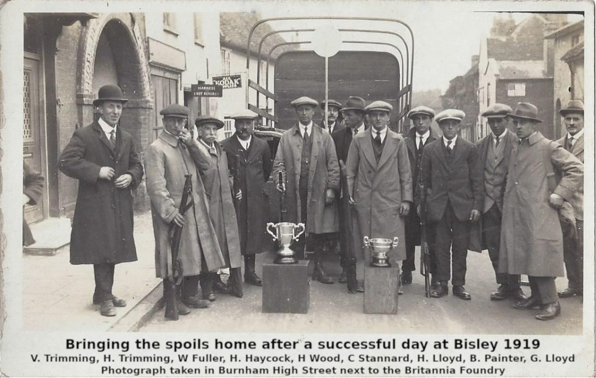
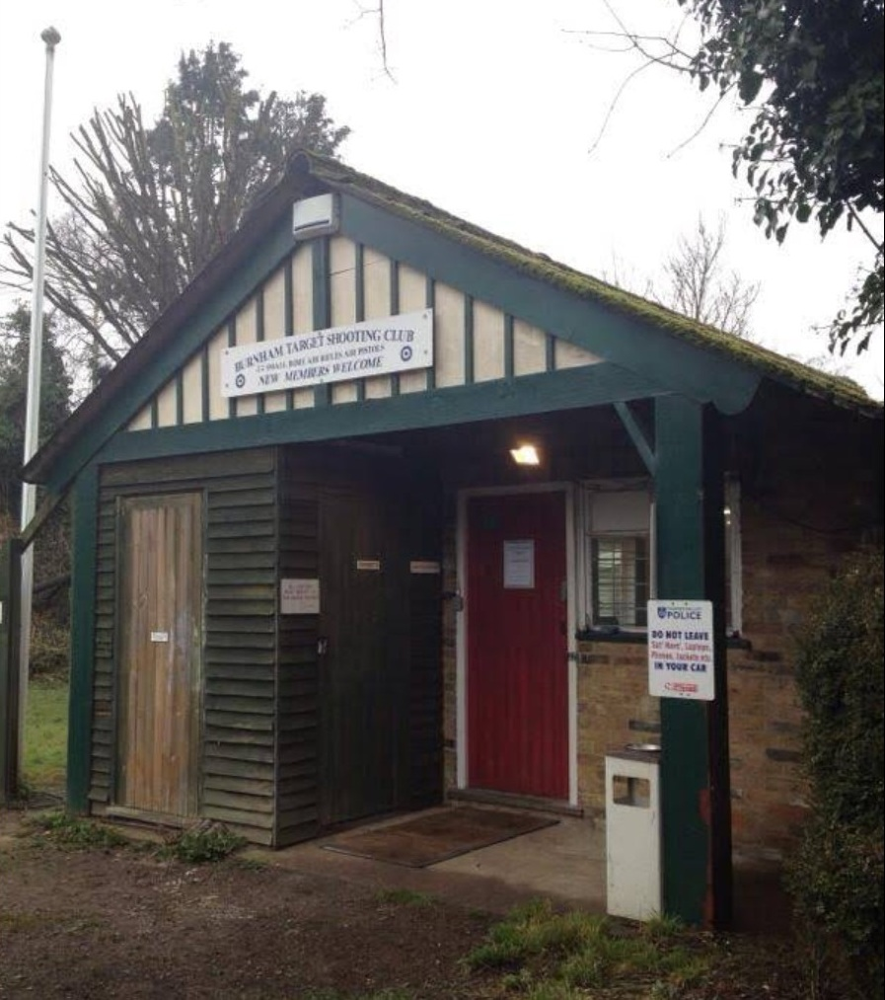
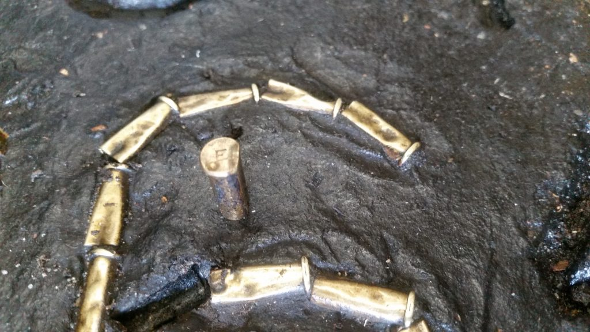
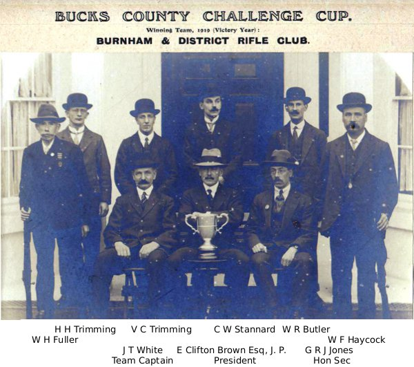
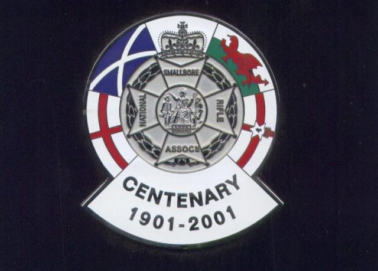

The story of Burnham Target Shooting Club from its origins as Burnham Rifle Club in 1899 to the thriving community of shooters that continues today.
Return To HomepageBurnham Target Shooting Club was founded in 1899 as Burnham Rifle Club. The club was formed during a period of national interest in marksmanship following the granting of a Royal Charter to the National Rifle Association.
The club became one of the earliest clubs affiliated with the NRA and later registered with the National Smallbore Rifle Association in 1901.
Club Founded
NSRA Affiliation
Aldbourne Road
Years Heritage
Burnham Rifle Club founded.
Became affiliated with the NSRA.
Webster Challenge Cup and Grenfell Cup donated.
Moved to the current Aldbourne Road range.
Used to support military marksmanship and Home Guard training.
Clubhouse constructed through member effort.
Merger with Slough Rifle Club.
Major range works and centenary celebrations.

The club originally operated from Burnham High Street, using Bisley shooting grounds and land at The Priory. Members travelled regularly to Bisley for full-bore practice and competitions.
Historic trophies and photographs preserved by the club continue to record those achievements.
Prior to 1958 there was no proper clubhouse and members shot from a simple timber structure that provided only basic protection from the weather.
In 1959 a loan from the NSRA enabled members to construct the clubhouse which was completed in October 1964.


Eley cartridge cases laid into the clubhouse floor to commemorate completion.

Burnham Rifle Club and Slough Rifle Club unite.

NSRA presentation recognising 100 years of the club.
The club continued to evolve through the late twentieth century. Major works were undertaken in 1997 to convert the range from 50-yard to 50-metre targets.
Following changes in firearms legislation, the club adopted the name Burnham Target Shooting Club and continued its focus on rifle and air shooting disciplines.
Today the club continues to welcome experienced shooters, families, beginners and junior members.
More than a century after its foundation, Burnham Target Shooting Club continues to support future generations of target shooters.